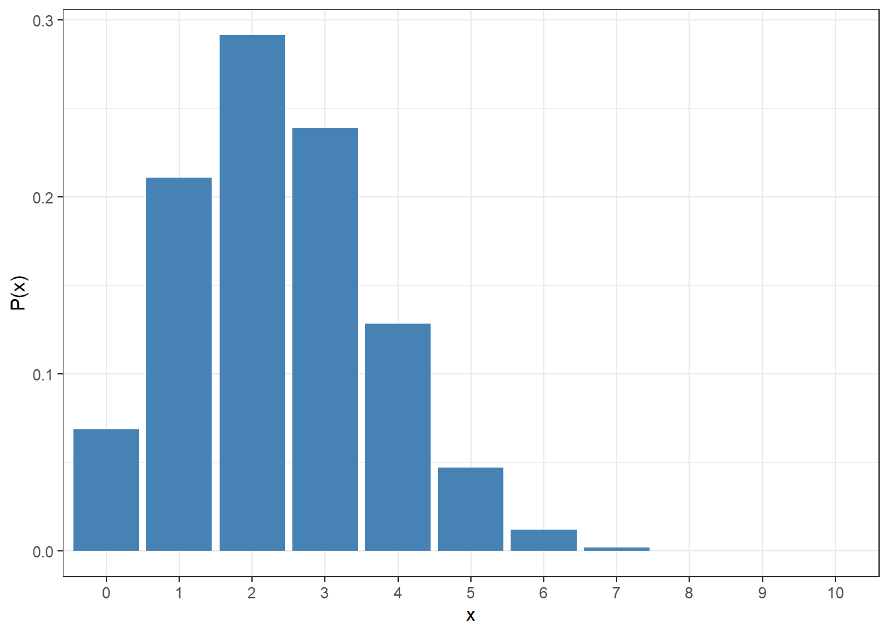

# Defining the number of trials and probability of success
n <- 10
p <- 0.235
snails <-
tibble(
# Creates a vector with all possible values of x, from 0 to 10 (n)
x = 0:n,
# The arguments size and prob correspond to n and p
px = dbinom(x = x, size = n, prob = p)
)10 Probabilities and probability distributions
Within statistics we want to make decisions that are influenced by uncertainty. For example how often do we expect to find a snail larger than the mean size? Depending on the snail we sample, we might find one larger than the mean or not. In order to understand this event we can use probabilities to inform us whether this event is something that occurs often or not. Probabilities are also useful in making decisions, for instance should I bring my umbrella with me when I leave in case it will rain? Probabilities are something us humans weigh and assess semi-consciously all the time when making decisions and statistics is just a formalization of these concepts with proper numbers.
10.1 What is a probability?
A probability is a representation (or model) of the chance that an event — for example “a snail is larger than the mean size of all snails” — occurs. It it our way of modelling a natural phenomenon that is impacted by randomness.
There are three common ways of measuring a probability:
- Using relative frequencies
- Using reasoning
- Using subjectivity
In Section 7.3.2 we presented a way to show which values and how often they appear within a variable. This corresponds to the relative frequency definition, we calculate how often an event has occurred — a specific value of the variable has been observed — out of the total number of samples observed. This way of defining a probability is an approximation as the samples observed might not represent the population from which they are drawn from, but the law of large numbers proves that if the sample is big enough the relative frequencies are close to the theoretical probabilities.
These theoretical probabilities are calculated using the second definition. Using reasoning we can define a probability as the ratio between “the number of outcomes that fulfill the desired event” and the “total number of outcomes that are possible to occur”.
The third definition is not something that we commonly use for calculations, at least not in the areas of statistics covered by this book, but it is closely tied to the semi-conscious assessments we humans do on a regular basis. The probability of it raining and you deciding to take your umbrella with you is subjective in the sense that one person might look at the weather and think that the probability of rain is high whereas another person looking at the same weather might have other pieces of knowledge that makes them think the probability is low. This definition of probability is difficult to measure, so the remainder of this text will focus on the two earlier definitions.
Important
A probability must take a value in the range of 0 - 1. If calculations on probabilities result in a value outside this range, something has gone horribly wrong.
10.2 Probability distributions
Similar to how we can show the distribution of an observed variable using relative frequencies (Section 7.3.2), we can use probabilities to show the probability distribution of a random variable. One important restriction of a probability distribution is that the events need to correspond to numerical values, e.g. the event needs to define the number of times a category occurs (discrete random variable) or a continuous random variable.
10.2.1 Discrete distributions
A common discrete probability distribution is the binomial distribution which counts “the number of successful trials from n independent trials with the same chance of success”.
The population of snails on Floreana Island of the Galápago contain seven species (as described in Section 4.2.2). We can define a successful trial as observing a snail of the Naesiotus calvus species and if we assume that the species is approximately 23.5% of the population, the random variable X counting the number of N. calvus snails observed in a sample of 10 snails is binomially distributed.
Warning
The binomial distribution assumes that the trials are independent from one another in the sense that the probability of observing a snail of the specific species does not change regardless of the other trials. Whether or not we can assume independence is also partially connected to the way we conduct the study, or sample the snails in this case.
If the sample is drawn only from one specific area of the island — the small clearing outside the research station — there might exist some condition that increases or decreases the prevalence of the species. It can then be argued that the probability of a snail of the species change from the initial 23.5% to a higher or lower number depending on if the first snail observed is a Naesiotus calvus.
We can describe this variable as: \[ X \sim Bin(n = 10, p = 0.235) \] where n is the number of trials (the size of the sample), and p is the probability of a successful trial (observing a N. calvus snail). Calculating probabilities from a distribution is done using a density function. The probability of getting x successful trials is calculated using the function: \[ P(x) = \binom{n}{x} p^x (1-p)^{n-x} \]
Probability distributions can also be summarized using a measure of center and spread but we call these by different names in this context. The expected value (E[X] or \(\mu\)) describes the “center” of the distribution, e.g. the expected number of snails of the specific species in a random experiment with 10 trials. The variance (\(\sigma^2\)) describes the spread around the expected value. Notice how we are using the population notation because that is what is described, not a sample of the random variable but the underlying population where the trials (samples) are drawn from.
The different events that can occur for X are each number of successes, from 0 to 10. The binomial distribution makes calculations of the probability for each event relatively easy using the density function, and with the help of R even more so. R has a range of functions for common distributions all containing four different types of calculations:
d: calculates the density (probability) of a specific value of X, in the discrete case the probability P(x) = ?.p: calculates the cumulative density (probability) up to or from a given value of X, e.g. P(X \(\le\) x) = ?.q: calculates the value of X based on a probability, e.g. P(X \(\le\) x) = 0.25 \(\rightarrow\) x = ?, not covered for the Binomial distribution.r: returns a random sample from the distribution, not covered in this text.
In the binomial case the functions are called dbinom, pbinom, qbinom and rbinom, with other distributions following the same format.
10.2.1.1 dbinom
The probability distribution of X can be presented in a table or a visualization. For a visualization, similar to the bar plots we have created earlier the x-axis should contain the different values the variable can be and the height of each bar correspond to the probability of each value. We can calculate the probability of each value with dbinom.
The dataset sent to ggplot contain the actual heights of the bars so we assign the y argument in aes to the probabilities and tell geom_bar to actually use the values provided by adding stat = "identity".
By default, R handles the variable x as a continuous numeric variable no matter if the dataset only contains whole numbers, so for the sake of clarity we should adjust the x-axis to show each whole number. An easy way to do this is to convert the variable x to a factor inside the visualization as we then force R to show each category on the x-axis.
snails |>
ggplot() +
aes(x = factor(x), y = px) +
geom_bar(stat = "identity", fill = "steelblue") +
labs(x = "x", y = "P(x)") +
theme_bw()

The probability of observing three N. calvus snails in the sample is P(3) = dbinom(x = 3, size = 10, p = 0.235) = 0.2387893. The visualization below has highlighted this probability in red.
10.2.1.2 pbinom
Sometimes we are interested in more than just a single value of x, for instance what is the probability of observing 3 or more N. calvus snails in our sample. This probability can be expressed as:
\[ P(X \ge 3) = P(3) + P(4) + P(5) + P(6) + P(7) + P(8) + P(9) + P(10) \] We simply calculate the sum of the probabilities for the individual values that correspond to the inequality, highlighted by the bars in red below.
Using visualizations we can understand what the probability actually depicts and learn when to use the properties of a probability distribution to our advantage.
Important
All probabilities of a probability distribution must sum to 1, otherwise it is not a probability distribution. This property allows us to make use of the complement of an event to simplify calculations.
Instead of calculating P(X \(\ge\) 3) (all the red bars) we can calculate 1 - P(X < 3) (the blue bars) because all bars in the plot should sum to 1 and removing the bars corresponding to values less than 3 leaves us with the probability we are looking for.
\[
P(X \ge 3) = 1 - P(X < 3) = 1 - [P(0) + P(1) + P(2)]
\] Now with the help of R, we do not necessarily have to use this type of technique to simplify the calculations — most modern computers can calculate relatively large probability calculations quickly — but it is always useful to know how to structure your calculations in case you run into issues. The total area of the red bars can be calculated either using the sum of individual dbinom function calls or simply by the function pbinom.
Instead of an argument x that defines the value for which to calculate a density (as we saw in dbinom), we now make use of the q argument, specifying which quantile of the distribution we want to calculate from. However qbinom expresses its probability calculation as P(X \(\le\) x) using the argument lower.tail = TRUE or P(X > x) using lower.tail = FALSE.
Since our inequality is “greater than or equal to 3” we need to adjust the value to conform to dbinom’s “greater than x”. In Figure 10.2 we can see another way to highlight the same red bars, namely P(X > 2).
# A vector of values as x provides the probabilities for each value
dbinom(x = 3:10, size = 10, prob = 0.235) |>
sum()[1] 0.4289805# Adding q = 3 would only calculate P(X > 3) and not include P(3) in the sum
pbinom(q = 3, size = 10, prob = 0.235, lower.tail = FALSE)[1] 0.1901911# Rewriting our probability to P(X > 2) provides the same answer as
# the sum of individual probabilities
pbinom(q = 2, size = 10, prob = 0.235, lower.tail = FALSE)[1] 0.4289805The probability of finding at least 3 snails of the N. calvus species is approximately 42.9%.
10.2.2 Continuous distributions
When the random variable is continuous, the number of unique values becomes infinitely many. The probability of getting an exact number down to the last decimal spot is infinitesimally small because the number of total outcomes is infinitely large, so we need to think about calculating probabilities a bit differently.
Instead of calculating the probability of a specific value of X, we see it solely as a point on a function or curve. The density function describes the shape of the continuous distribution and probabilities are calculated by the area under the curve. Within mathematics this would be done by integrating the function between two set points, but the distributions used in statistics tend to have relatively complex functions hence the need of a computer program.
A common continuous distribution is the normal distribution1. The name normal comes from the fact that the shape of the distribution is found in many different aspects of life when describing a continuous variable, especially within biological data.
We can define a new random variable Y as the size of the snail shell and assume that it is normally distributed as: \[ Y \sim N(\mu_Y = 19.59, \sigma_Y = 3.79) \] where \(\mu_Y\) is the mean of the variable Y and \(\sigma_Y\) is the standard deviation of the variable Y.
Warning
In this example we assume that the population of size is normally distributed but there is always an inherent risk with making assumptions. Usually assumptions are made after discussing with experts in the field and/or using previous research after which we have an idea whether it is reasonable to assume a specific distribution applies or not.
As we mentioned earlier the shape of the distribution is created using a density function. Instead of calculating P(x) we use the function f(x) to plot the line for every continuous value of x. The function for the normal distribution is: \[ f(x) = \frac{1}{\sigma \sqrt{2\pi}} \exp\left(-\frac{(x - \mu)^2}{2\sigma^2}\right) \] where \(\pi\) is the constant 3.1415, \(\mu\) is the mean of the distribution and \(\sigma^2\) is the variance of the distribution.
10.2.2.1 dnorm
We can use the function dnorm to plot the curve of the distribution for Y. Similar to the binomial function, the arguments of dnorm include the parameters that we use to describe the distribution — the mean and the standard deviation.
snailDist <-
tibble(
# Create a vector of the values of x as a sequence with 0.001 step size
x = seq(from = 5, to = 35, by = 0.001),
y = dnorm(x, mean = 19.59, sd = 3.79)
)
snailDist |>
ggplot() +
aes(x = x, y = y) +
# geom_line will draw a line between every point in the plot
geom_line(linewidth = 1) +
theme_bw() +
# Adds a line for the
geom_segment(
aes(
x = 19.59, xend = 19.59,
y = 0, yend = dnorm(19.59, mean = 19.59, sd = 3.79)
),
color = "steelblue",
linewidth = 1,
# Make a striped line
linetype = 2
)Warning in geom_segment(aes(x = 19.59, xend = 19.59, y = 0, yend = dnorm(19.59, : All aesthetics have length 1, but the data has 30001 rows.
ℹ Please consider using `annotate()` or provide this layer with data containing
a single row.One of the main properties of the normal distribution is its symmetry around the mean (striped blue line). If we move a specific number of x-steps to the right, the value of f(x) would be the same if we move the same number of x-steps to the left. Note that just because the plot is limited from 5 to 35 on the x-axis the distribution continues outside of the view window, just with very small densities.
10.2.2.2 pnorm
We can use pnorm to simplify calculations that involve integration of areas under the curve. For instance, what is the probability of a randomly selected snail to have a shell size less than 17? Because we now have a continuous distribution there is no difference between P(Y < 17) or P(Y \(\le\) 17), it is only the direction of the inequality that is important. In the plot below, the red area highlights the probability we want to calculate.

In order to find this probability we need to define the quantile of the inequality as well as the mean and the standard deviation of the distribution. If we were to calculate this “by hand” without the use of R or another computer program, we would instead standardize the value and look for the probability in a table of the standardized normal distribution. We could also do this in R by standardizing the quantile using \(z = \frac{y - \mu_Y}{\sigma_Y}\).
# Calculates from the distribution of Y
pnorm(q = 17, mean = 19.59, sd = 3.79, lower.tail = TRUE)[1] 0.2471842# Calculates from the standardized distribution Z (default argument values)
pnorm(q = (17 - 19.59) / 3.79)[1] 0.2471842The argument lower.tail acts the same as it does for the binomial distribution, except that we do not differentiate between < and \(\le\). If we were interested in the probability of a randomly selected snail to have a shell size of more than 17, it can be calculated as:
pnorm(q = 17, mean = 19.59, sd = 3.79, lower.tail = FALSE)[1] 0.752815810.2.3 Finding quantiles
For both of these distributions there might come a time where we need to calculate a quantile (value) from a given probability. In Section 6.3.1.3 we defined a quantile as a value of the variable that splits the data into a specific proportion, e.g. the 25th percentile splits the data where 25 percent of the data is lower and 75 percent of the data is higher than the value. When we now talk about quantiles, the value defines the split where a certain percentage of the distribution is lower or higher than the value.
In the discrete case, we might encounter some issues when finding specific quantiles as the discrete outcomes tend to contain a big part of the probability distribution. The solution is to find the smallest value of x fulfills the inequality with at least the given probability. We can phrase a question such as: At most how many N. calvus snails do we find in 25 percent of the experiments? This question can be written mathematically as P(X \(\le\) x) = 0.25.
From Figure 10.1 we see that P(0) only sums up to around 0.07 which is less than the probability we are looking for. Adding P(1) to the sum results in the cumulative probability being around 0.28 which is larger than the sought probability. Therefore the value of x = 1 is the smallest value of x that is at least the probability we are looking for.
# The function asks for p, a probability, and returns a quantile
qbinom(p = 0.25, size = 10, prob = 0.235)[1] 1For continuous distributions we do not need to make these approximations as the quantile can take on infinite amount of values. Instead we simply look for the exact quantile (value) that corresponds to the given probability. For instance, what is the shell size for the largest 5 percent of the population? We want to find y from P(Y > y) = 0.05 or using R:
qnorm(p = 0.05, mean = 19.59, sd = 3.79, lower.tail = FALSE)[1] 25.824This is conceptually similar to finding critical values that we will return to when introducing statistical inference.
In the following application (in Swedish), you can try to visualize different distributions and either ways to calculate probabilities or quantiles. On top of the normal and binomial distribution, the tool has additional distributions that we will discuss more in later chapters.
10.3 Summary and exercises
We can measure uncertainty with the help of probabilities and probability distributions allow us to asses how likely an event is to occur. In discrete distributions there is a distinct difference between inequalities using < and \(\le\), while in the continuous case the probability of a specific outcome is essentially 0 that there is no practical difference. We can use functions in R to both calculate probabilities of a specific outcome (e.g. dbinom), probabilities of inequalities (e.g. pbinom), or quantiles from a given probability (e.g. qbinom).
For the exercises we will return to the iris dataset seen in earlier chapters (e.g. Section 5.3). For these questions we assume that the prevalence of the species in a specific area are:
| species | prevalence |
|---|---|
| setosa | 0.24 |
| versicolor | 0.47 |
| virginica | 0.29 |
Assume that we pick 20 flowers at random in the specific area.
What is the probability of finding exactly 10 flowers of the species setosa?
What is the probability of finding more than 10 flowers of the species versicolor?
For the next questions assume that the petal length of the setosa species is normally distributed with a mean length of 1.46 cm and a standard deviation of 0.174 cm.
What is the probability of finding a plant with a petal length of less than 1.1 cm?
What is the probability of finding a plant with a petal length between 1.1 and 1.46 cm?
Which length must a plant be larger than to be considered among the largest 10 percent?
Also called the Gaussian distribution or a bell curve.↩︎